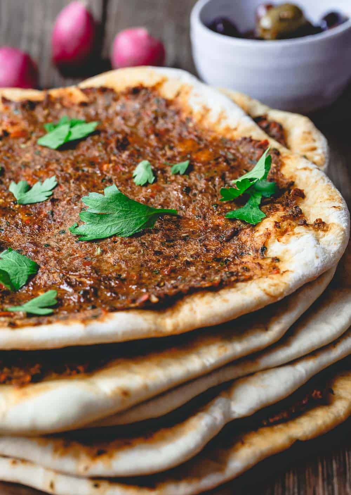

Lahmacun

This lahmacun recipe is the perfect prepare-ahead lunch. And it's a great dinner on-the-go.
To serve a crowd, slice it up and serve with other Mezze favorites. See serving ideas below.
It is popular in Turkey as in various parts of the Levant where the Ottoman empire once extended.
And there are meat pie--or pizza--variations, including manaqish and sfiha. Lahmacun is also known as Armenian pizza, Turkish pizza,
Lebanese pizza, Arab pizza...It's that popular!
How to Make Lahmacun Recipe
Lahmacun has two different components. The dough and the meat topping.
- Make the dough
- In a large mixing bowl, combine flour, salt, and olive oil.
- Work the mixture with your hands. Now, make a well in the middle and pour in the yeast and water mixture. Stir until soft dough forms.
- Turn dough onto a lightly floured surface and knead for 10 minutes or until dough is elastic, smooth, and no longer sticky (as you knead, if dough is too sticky for you, you can sprinkle just a tiny bit of flour to help it).
- The meat topping
- Turkish lahmacun is made with minced lamb, but you can also use lean ground beef. What makes the topping special is the combination of flavors. In this lahmacun recipe, I use a food processor to create the topping. Ground lamb (or beef), mixed with sweet red peppers, shallots, garlic, tomato paste, fresh herbs, and an epic fusion of spices!
- I played with the spices and arrived at a complex, earthy, warm blend of: smoked paprika, allspice, cumin, Aleppo-style pepper, a dash of cinnamon, and a pinch of cayenne. You can omit the cayenne if you need to, or add more if you like the heat!
- How to cook Lahmacun
- To make lahmacun, the idea is to spread the spiced meat topping very thinly across the dough.
- You can bake the lahmacun briefly until the topping is well cooked through and the dough turns nice and crispy around the edges. Or, if you don't feel like warming up the oven, you can try the stovetop method using a large non-stick skillet.